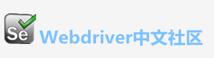

开始时间：2018-07-31 11:44:46
结束时间：2018-07-31 11:50:52
用 时：6分5秒967毫秒
zbwx-自动化测试报告
用例总数 |
通过数（pass） |
失败数(failed) |
跳过数(skip) |
通过率 |
100.00% |
| 所有测试用例 | ||||||
| 序号 | 功能模块 | 用例名称 | 测试结果 | 备注 | 耗时 | |
| 1 | 登录测试 | 进入行情页面 | 输入数据：无 | 1分46秒277毫秒 | ||
| 2 | 登录测试 | 行情页面切换商品 | 输入数据：无 | 52秒539毫秒 | ||
| 3 | 登录测试 | 行情页面点击消息按钮 | 输入数据：无 | 35秒131毫秒 | ||
| 4 | 登录测试 | 行情页面K线选择M5 | 输入数据：无 | 28秒324毫秒 | ||
| 5 | 登录测试 | 行情页面K线选择M15 | 输入数据：无 | 32秒656毫秒 | ||
| 6 | 登录测试 | 行情页面K线选择H1 | 输入数据：无 | 29秒397毫秒 | ||
| 7 | 登录测试 | 行情页面K线选择D1 | 输入数据：无 | 21秒609毫秒 | ||
| 8 | 登录测试 | 行情页面K线选择‘分时线’ | 输入数据：无 | 26秒282毫秒 | ||
| 9 | 登录测试 | 行情页面点击定购按钮 | 输入数据：无 | 33秒713毫秒 | ||
| 跳过测试用例 | 序号 | 功能模块 | 用例名称 | 测试结果 | 备注 | 耗时 |
| 成功测试用例 | ||||||
| 序号 | 功能模块 | 用例名称 | 测试结果 | 备注 | 耗时 | |
| 1 | 登录测试 | 进入行情页面 | 输入数据：无 | 1分46秒277毫秒 | ||
| 2 | 登录测试 | 行情页面切换商品 | 输入数据：无 | 52秒539毫秒 | ||
| 3 | 登录测试 | 行情页面点击消息按钮 | 输入数据：无 | 35秒131毫秒 | ||
| 4 | 登录测试 | 行情页面K线选择M5 | 输入数据：无 | 28秒324毫秒 | ||
| 5 | 登录测试 | 行情页面K线选择M15 | 输入数据：无 | 32秒656毫秒 | ||
| 6 | 登录测试 | 行情页面K线选择H1 | 输入数据：无 | 29秒397毫秒 | ||
| 7 | 登录测试 | 行情页面K线选择D1 | 输入数据：无 | 21秒609毫秒 | ||
| 8 | 登录测试 | 行情页面K线选择‘分时线’ | 输入数据：无 | 26秒282毫秒 | ||
| 9 | 登录测试 | 行情页面点击定购按钮 | 输入数据：无 | 33秒713毫秒 | ||
| 失败测试用例 | ||||||
| 序号 | 功能模块 | 用例名称 | 测试结果 | 备注 | 耗时 | |